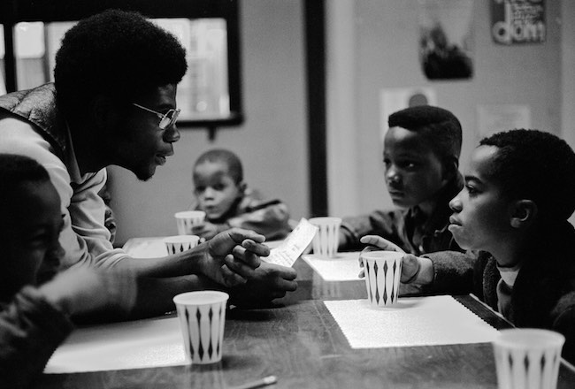

From Jacobin magazine, a new audio documentary about struggles
in the United States. Each six-episode season covers one local story,
told from the viewpoint of working-class people.
The Point
Rebellion and Resistance in Boston Public Housing
Episode One, "Placement"
Mothers at the Columbia Point project form a blockade to stop dump trucks carrying waste
from urban renewal on Mount Vernon Street in Dorchester, 1962. (Boston Herald)
At a new public housing project in Boston, mothers organize to try and close
the city dump. Meanwhile, a black freedom movement emerges across Northern cities.
[transcript |
mp3]
Episode Two, "Grove Hall"
Members of the Mothers for Adequate Welfare, known as “MAW,” gather at a community space at the Columbia Point housing project. (WGBH)
As urban rebellions arise in cities, welfare rights advocates in Boston public housing use militant tactics to get services they are owed.
[transcript |
mp3]
Episode Three, "Rent Strike"
Occupations and squats were common in the South End during the late 60s and early 70s. Most famously, Mel King, Chuck Turner, and others occupied a cleared lot in protest of plans for a parking lot to be built there. The occupation became known as Tent City.(Northeastern University)
Tenants take their growing dissatisfaction and aim it at their landlord, the Boston Housing Authority.
[transcript |
mp3]
Episode Four, "Free Breakfast"

Free Breakfast for School Children, a "survival program" led by the Black Panther Party, combined service to the hungry with a revolutionary program of self-determination. (Stephen Shames)
Sisters Angie Irving and Linda Wade bring the Black Panthers to Columbia Point.
[transcript |
mp3]
Reading Series
A People's Anthology
In collaboration with Boston Review, we’re creating a
series of texts and speeches to supplement the main podcast called
A People’s Anthology. Our first season brings together key
primary sources relating to urban rebellions, from Claudia Jones
to the Combahee River Collective.
Frida Kahlo, detail from "Marxism will give health to the
sick," 1954.
We don’t believe in eternal paywalls, so A People’s Anthology will
become publicly available some time next year — but for now only
our Patreon supporters and
Boston Review members
will get access to this pod!
About
People's History is an independent radio series that examines the past
from the perspective of the working class.
Our first season, The Point, traces a social history of Boston from
the urban rebellions of the 1960s, through busing in the 70s, into the
Clinton era.
We investigate these events from the lens of one community:
Columbia Point, the largest public housing project in New England.
Built on an isolated landfill site next to the Boston city dump,
it was the site of major organizing, from welfare rights to a Free
Breakfast for Children program. It was also the first federal public
housing project to be sold off and redeveloped as private
"mixed-income" development (and was a model for the federal policy
"HOPE VI").
This is the untold story of the tenant struggles in and around
Boston public housing. It’s a story about working people—mainly
black mothers—standing up to the mayor’s office, organizing
sit-ins to get the services they were owed, fighting evictions,
and creating their own power.
Team
Alejandro Ramirez is an associate editor of Nashville Scene, and
grew up in Lawrence, Massachusetts. He is the former editor of
Spare Change News in Boston. Conor Gillies grew up in Maine and
studied history at Boston University. He's a producer for Radio
Open Source.
Co-produced by Alison Bruzek, Rehanna Fernandez Nuñez, Rosie
Gillies, and Qainat Kahn. Editing help from Ben Shapiro, David
Wallis, and Alissa Quart. Theme music by Marisa Anderson, original score by Visitor, which
is a project of Liz Harris
and Ilyas Ahmed.
Major production help from Ed Paget, Patrick King, Caitlin Rose, and Alex Silva.
Header art by Seena Mavaddat. Detail from "Community Power," copperplate print, 2019.